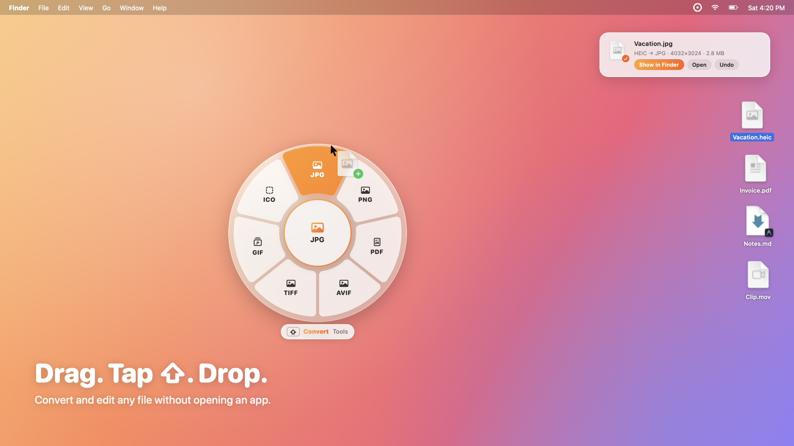
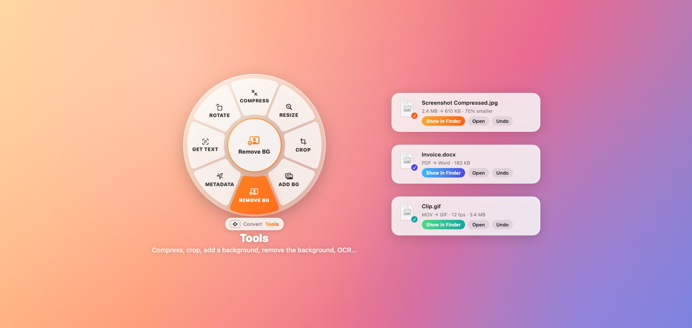
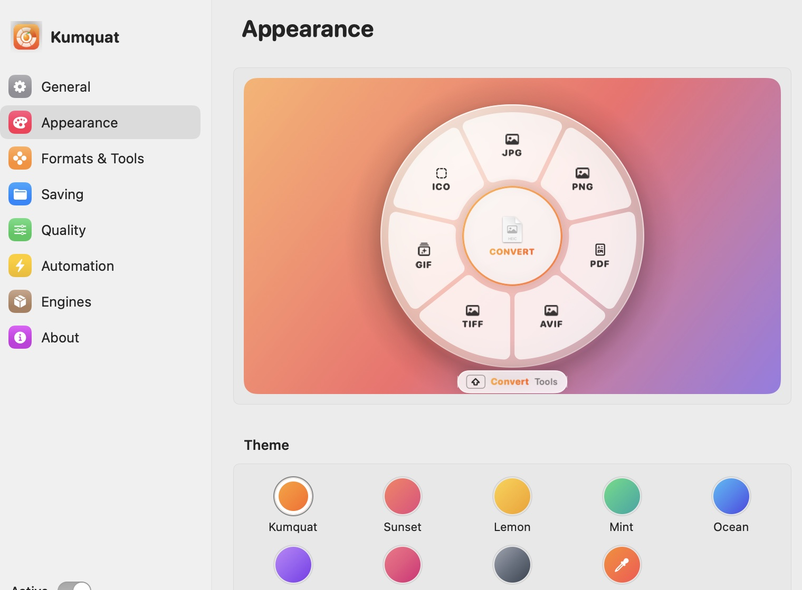

- Open the file in an app
- Find File → Export…
- Pick a format from a menu
- Choose a folder
- Click Save, then go find it
Free and open source, made for macOS
Drag. Tap ⇧. Drop.
A free file converter that lives inside your drag-and-drop. Grab any file, move it a little, tap Shift, and drop it on a format. Images, PDFs, documents, video and audio, converted right on your Mac.
Or install with one line in Terminal (no security prompt):
$curl -fsSL https://raw.githubusercontent.com/iandifilippo/Kumquat/main/install.sh | bash
Live demo. Drag a file on the desktop above, tap ⇧ while you hold it, and drop it on a slice. On a phone the ring opens by itself.
60+formats, built in
9languages
0uploads, accounts or trackers
MITfree and open source
How it works
One gesture instead of five menus.
Converting a file usually means opening an app, finding Export…, picking a format and a folder. Kumquat does it in the middle of a drag.
-
1
Start dragging
Grab any file (or several) in Finder or on the desktop, and move it a little so macOS starts the drag.
-
2
Tap ⇧ Shift
Still holding the file, tap Shift. A glass ring of formats opens right under your cursor. Tap ⇧ again to flip between Convert and Tools.
-
3
Drop it on a slice
The new file is saved next to the original, which is never touched. A notification shows the size change, with Show in Finder, Open and Undo.
Changed your mind? Drop on the center of the ring, or let go anywhere else, and nothing happens.
Two pages, one ring
Convert it. Or fix it.
The ring knows what you're holding. Drop a photo and you get image formats; drop a PDF and you get images, text and Word. Tap ⇧ again and the same ring turns into Tools: compress, resize, crop, remove a background, pull out the text, and more.
- See what changed at a glance: 2.4 MB → 610 KB · 75% smaller
- Drop several files at once. They're processed in the background.
- Made a mistake? Undo in the notification removes the new file.
Point at a slice. Press ⇧ on your keyboard, or tap the pill, to switch pages.


Real screenshots of Kumquat on macOS.
What it converts
Almost anything you can drag.
Built on the frameworks that already ship with macOS. Nothing extra to install, nothing sent anywhere.
Images
Drop
HEICJPGPNGAVIFTIFFGIFBMPICOICNSPSDSVGRAW
Get
JPGPNGHEICAVIFTIFFGIFBMPICOICNSPSDPDF
Tools
CompressResizeCropAdd BackgroundRemove BackgroundGet TextStrip MetadataRotateFlipB&W
Several images become one PDF. Remove Background runs on-device AI and also clears plain backdrops behind signatures and logos. Add Background adds padding, rounded corners, a shadow and an aspect ratio. Get Text copies what it reads to the clipboard, and Strip Metadata removes location and camera details.
Drop
PDF
Get
JPGPNGTIFFTXTWordRTFHTMLEPUB
Tools
CompressMergeSplitRotateProtect with PasswordOCR
Export every page as its own image, or the whole document as one long image. OCR makes scanned PDFs searchable and copyable.
Documents
Drop
TXTMarkdownRTFWordHTMLODTEPUB
Get
PDFDOCXEPUBTXTRTFHTML
Turn notes into a PDF, a Markdown file into Word, or an article into an e-book.
Spreadsheets & data
Drop
CSVTSVJSONXLSXPLIST
Get
CSVTSVJSONXLSXPLISTHTML tablePDF
Any of them into any other, plus a clean table you can print or share.
Video
Drop
MOVMP4M4V
Get
MP4MOVGIFM4A audioFrames to a folder
Tools
CompressMute
Audio
Drop
MP3WAVAIFFM4AFLACCAF
Get
M4AWAVAIFFFLACCAF
Archives
Compress
Any files or foldersZIP
Extract
ZIPRAR7ZTARGZ…
Subtitles
Both ways
SRT↔VTT
Optional engines
Got FFmpeg, LibreOffice or Ghostscript?
Kumquat doesn't need them. But if one is already installed (through Homebrew or LibreOffice's own installer), it finds it and adds more formats to the ring.
FFmpegWebM, MKV, AVI, MP3, OGG, OPUS, WebP
LibreOfficeExcel, PowerPoint, and Word with its full layout
GhostscriptStronger PDF compression
No drag needed
Other ways in.
The ring is the fastest route, not the only one. Kumquat sits quietly in your menu bar and shows up wherever you already work.
Menu bar
Click the icon and choose Convert a File…, or drop files right onto the icon.
Finder right-click
Services → Convert with Kumquat, or Open With → Kumquat.
Global shortcut
Select files in Finder and press ⌃ ⌥ K. The ring opens for whatever is selected.
Watch folders
Pick a folder and a format. Anything that lands there is converted automatically.
# And from Terminal, with the kumquat command-line tool:
$ kumquat convert photo.heic --to jpg
Make it yours
Your ring, your colors.
Everything about the ring can be changed in Settings, with a live preview as you go.
-
8 themes, or your own gradientPick a palette or mix any two colors into a custom one.
-
Frosted, Liquid Glass or SolidIn light, dark, or matching the system.
-
Size, opacity and labelsMake the ring bigger or smaller, the slices clearer or more see-through, with icons, text or both.
-
Your trigger keyOpen the ring with ⇧, ⌥, ⌃ or ⌘.
-
Only the slices you useChoose which formats and tools appear, and drag them into your order.
-
Where and how files are savedNext to the original, in a subfolder or a folder you choose, with your own quality settings.
-
Your languageEnglish, Español, Português, Français, Deutsch, Italiano, 日本語, 한국어 and 简体中文. More translations are welcome on GitHub.

Privacy
Your files never leave your Mac.
Every conversion, every background removal, every bit of OCR happens on your own machine. There's nothing to sign up for and nothing watching what you do.
No accountsDownload it and go.
No uploadsFiles are processed locally.
No analyticsNo tracking of any kind.
Open sourceRead every line, MIT licensed.
The only time it touches the network is an optional check for new versions on GitHub.
FAQ
Questions, answered.
macOS says it can't verify the app. What do I do?
Kumquat isn't notarized by Apple yet, so the first time you open it from the .dmg, macOS shows a warning. Click Done, then go to System Settings → Privacy & Security, scroll down and click Open Anyway. You only need to do this once.
Prefer to skip it? The one-line install command copies Kumquat into Applications without triggering the warning. Run it again any time to update.
Does it need special permissions?
No. Kumquat doesn't ask for Accessibility or Screen Recording access. It notices drags and modifier keys through standard system events, and it never reads your screen or what you type.
Is it really free?
Yes. Kumquat is open source under the MIT license. No trial, no paid tier, no ads.
Which Macs does it run on?
Any Mac with macOS 14 Sonoma or later. It's a universal app, so it runs natively on both Apple Silicon and Intel.
Where do converted files go?
Next to the original by default, with a fresh name like Photo 2.jpg if the name is taken. You can also save to a subfolder or a folder of your choice. The original is never changed, and Undo in the notification removes the new file.
Found a bug, or missing a format?
Please open an issue on GitHub. Ideas, bug reports and pull requests are all welcome.
Your next drag could be a conversion.
Free, open source, and ready in a few seconds.
$curl -fsSL https://raw.githubusercontent.com/iandifilippo/Kumquat/main/install.sh | bash